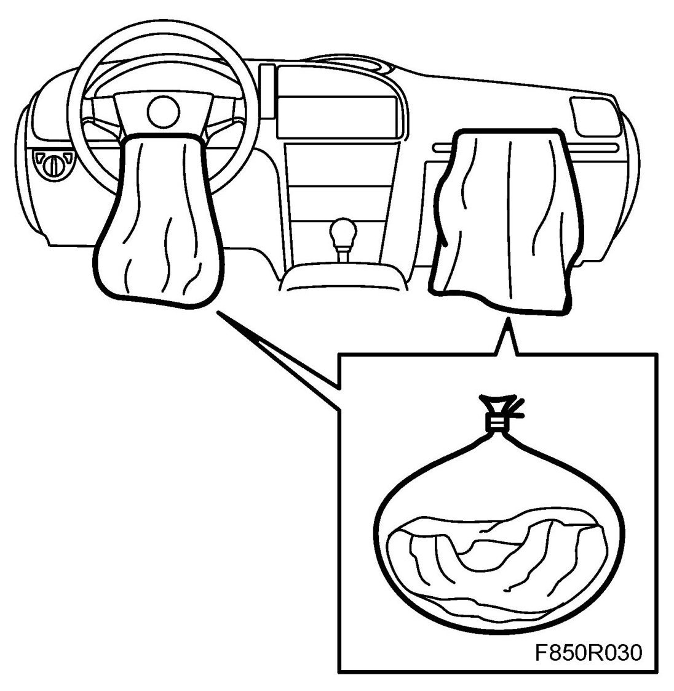
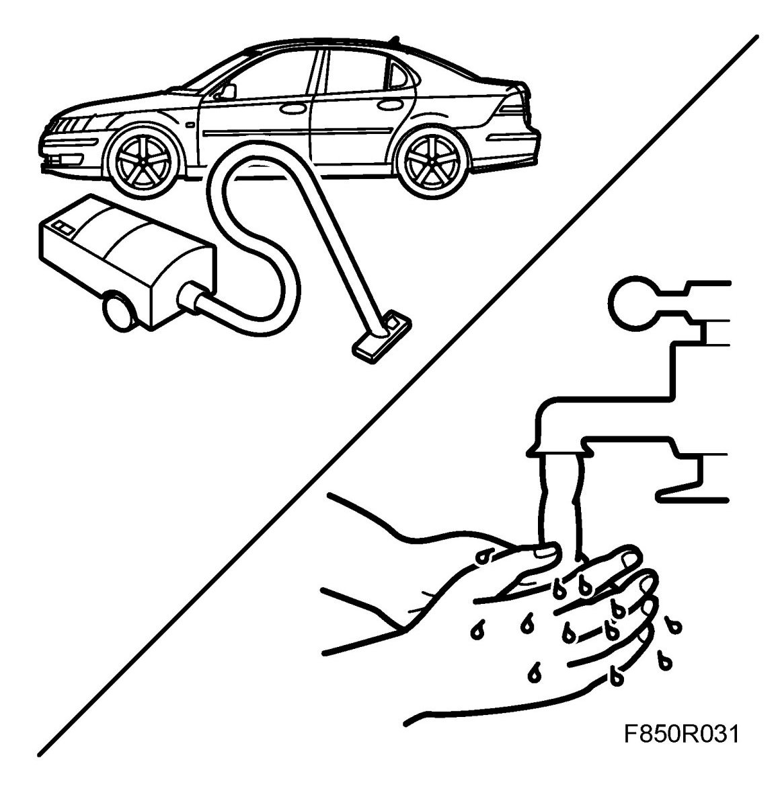

Cleaning Cars With Activated Airbags
Cleaning Cars With Activated Airbags
- When the airbag has been activated, combustion residues are released in the form of dust particles that can contain traces of caustic soda.

WARNING: Wear protective glasses and protective gloves in order to avoid the risk of irritation to the skin and eyes when cleaning a car with activated airbags.
- Place the airbag in a sealed plastic bag after it has been dismantled. Remember that airbag's gas generator is very hot immediately after an airbag has been activated.
- Vacuum clean the car very carefully on all interior surfaces.

- Wash your hands using soap and water after handling an activated airbag.